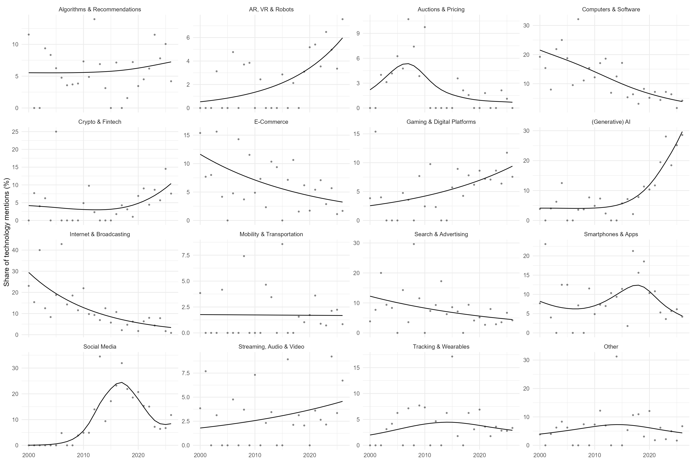
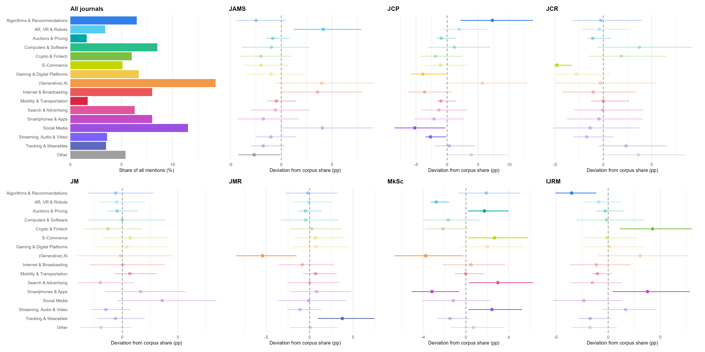

Detailed and Supplementary Analyses for 1 – Modeling the Field
For analysis 1, we semantically cluster and temporally analyze consumer technologies identified through an LLM-aided, bottom-up literature search process (see Inclusion of Articles in Corpus). In this supplementary material, we provide interactive HTML maps of the results, detailed information on the statistical evaluation, and additional analyses not reported in the main materials.
Field Map
Temporal Trajectories
We assess the temporal trajectories both visually (see the figures above) and statistically, using generalized additive models (Wood, 2017) to model relative attention as a smooth of the year while controlling for other variables we deem relevant.
We compare Poisson models against negative binomial models. Negative binomial models (\(df = 3\)) produce a much better fit than Poisson models (\(df = 2\)) due to their ability to account for overdispersion (\(AIC_\text{poisson} = 2352.58\), \(AIC_\text{nb} = 1908.01\)).
We determine \(k\) for the year smooth within the GAM by assessing all individual cluster trajectories, fitting models for all clusters at increasing values of \(k\) and taking the smallest \(k\) at which the edf has stopped growing for every cluster, which is \(k = 10\). We fit all models with REML.
We report the maximum of the fitted curve for s(year) as the peak, with raw and adjusted (Benjamini-Hochberg method) p-values, in Table 1. Additionally, we report the predicted peak share and the actual peak share as a robustness measure.
| edf | Technology cluster | Mentions | Peak year | Observed share | Fitted share | p | pBH |
|---|---|---|---|---|---|---|---|
| 1.30 | Algorithms & Recommendations | 103 | 2026 | 4.2% | 7.2% | .605 | .646 |
| 1.00 | AR, VR & Robots | 54 | 2026 | 7.6% | 6.0% | < .001 | .003 |
| 2.94 | Auctions & Pricing | 26 | 2007 | 10.7% | 5.4% | .006 | .011 |
| 1.77 | Computers & Software | 134 | 2000 | 19.2% | 21.5% | < .001 | < .001 |
| 2.16 | Crypto & Fintech | 95 | 2026 | 7.6% | 10.4% | .038 | .061 |
| 1.00 | E-Commerce | 81 | 2000 | 15.4% | 11.6% | .001 | .003 |
| 1.00 | Gaming & Digital Platforms | 106 | 2026 | 7.6% | 9.4% | .002 | .006 |
| 2.72 | (Generative) AI | 225 | 2026 | 28.6% | 29.7% | < .001 | < .001 |
| 1.00 | Internet & Broadcasting | 127 | 2000 | 23.1% | 29.4% | < .001 | < .001 |
| 1.00 | Mobility & Transportation | 27 | 2000 | 3.8% | 1.8% | .942 | .942 |
| 1.00 | Search & Advertising | 99 | 2000 | 3.8% | 12.2% | .012 | .022 |
| 3.35 | Smartphones & Apps | 126 | 2018 | 15.6% | 12.4% | .048 | .069 |
| 4.55 | Social Media | 182 | 2017 | 31.9% | 24.4% | < .001 | < .001 |
| 1.00 | Streaming, Audio & Video | 57 | 2026 | 6.7% | 4.6% | .153 | .204 |
| 2.00 | Tracking & Wearables | 56 | 2014 | 6.2% | 4.5% | .413 | .508 |
| 1.84 | Other | 85 | 2014 | 31.2% | 7.3% | .458 | .523 |
Figure 1 plots the predicted curves for each technology.

Focus on Technology Clusters Within Journals
We compare the overall distribution of attention devoted to consumer technologies across all seven journals with the distribution observed within each journal. To assess differences in the spread of attention, we compare each individual journal’s spread against the overall spread using Dirichlet distributions, judging a journal whose individual spread lies fully outside the 95% credible interval of the overall spread as having a credibly higher or lower focus than overall.
A Dirichlet distribution is a set of independent gamma distributions divided by their sum.
We draw 20,000 samples from the Dirichlet posterior of each journal’s technology shares. The baseline is a Dirichlet distribution whose concentration is the baseline distribution of each cluster times a pseudo-count of 16 (because we have 16 clusters).
Table 2 reports the distribution of consumer-technology mentions across technology clusters, pooled across all journals and within each journal, with marks for clusters whose share credibly deviates from the pooled share.
| Journal | Algorithms & Recommendations | AR, VR & Robots | Auctions & Pricing | Computers & Software | Crypto & Fintech | E-Commerce | Gaming & Digital Platforms | (Generative) AI | Internet & Broadcasting | Mobility & Transportation | Search & Advertising | Smartphones & Apps | Social Media | Streaming, Audio & Video | Tracking & Wearables | Other |
|---|---|---|---|---|---|---|---|---|---|---|---|---|---|---|---|---|
| All journals | 103 (6.5%) | 54 (3.4%) | 26 (1.6%) | 134 (8.5%) | 95 (6.0%) | 81 (5.1%) | 106 (6.7%) | 225 (14.2%) | 127 (8.0%) | 27 (1.7%) | 99 (6.3%) | 126 (8.0%) | 182 (11.5%) | 57 (3.6%) | 56 (3.5%) | 85 (5.4%) |
| JAMS | 9 (4.0%) | 18 (8.0%)1 | 2 (0.9%) | 17 (7.5%) | 9 (4.0%) | 7 (3.1%) | 13 (5.8%) | 42 (18.6%) | 27 (11.9%) | 3 (1.3%) | 13 (5.8%) | 14 (6.2%) | 36 (15.9%) | 6 (2.7%) | 4 (1.8%) | 6 (2.7%)2 |
| JCP | 18 (15.0%)1 | 7 (5.8%) | 1 (0.8%) | 12 (10.0%) | 5 (4.2%) | 5 (4.2%) | 3 (2.5%)2 | 25 (20.8%) | 5 (4.2%) | 1 (0.8%) | 6 (5.0%) | 7 (5.8%) | 7 (5.8%)2 | 1 (0.8%)2 | 5 (4.2%) | 12 (10.0%) |
| JCR | 10 (6.4%) | 5 (3.2%) | 1 (0.6%) | 20 (12.7%) | 13 (8.3%) | 0 (0.0%)2 | 6 (3.8%) | 22 (14.0%) | 11 (7.0%) | 3 (1.9%) | 10 (6.4%) | 12 (7.6%) | 16 (10.2%) | 3 (1.9%) | 10 (6.4%) | 15 (9.6%) |
| JM | 14 (6.0%) | 7 (3.0%) | 3 (1.3%) | 20 (8.6%) | 11 (4.7%) | 14 (6.0%) | 17 (7.3%) | 33 (14.2%) | 19 (8.2%) | 6 (2.6%) | 10 (4.3%) | 23 (9.9%) | 36 (15.5%) | 5 (2.1%) | 7 (3.0%) | 8 (3.4%) |
| JMR | 15 (6.4%) | 8 (3.4%) | 3 (1.3%) | 19 (8.1%) | 15 (6.4%) | 14 (6.0%) | 18 (7.7%) | 20 (8.5%)2 | 17 (7.2%) | 6 (2.6%) | 15 (6.4%) | 21 (8.9%) | 27 (11.5%) | 6 (2.6%) | 18 (7.7%)1 | 13 (5.5%) |
| MkSc | 29 (8.6%) | 2 (0.6%)2 | 12 (3.6%)1 | 23 (6.8%) | 13 (3.8%) | 27 (8.0%)1 | 30 (8.9%) | 35 (10.4%)2 | 29 (8.6%) | 6 (1.8%) | 32 (9.5%)1 | 16 (4.7%)2 | 35 (10.4%) | 21 (6.2%)1 | 7 (2.1%) | 21 (6.2%) |
| IJRM | 8 (2.9%)2 | 7 (2.6%) | 4 (1.5%) | 23 (8.4%) | 29 (10.6%)1 | 14 (5.1%) | 19 (6.9%) | 48 (17.5%) | 19 (6.9%) | 2 (0.7%) | 13 (4.7%) | 33 (12.0%)1 | 25 (9.1%) | 15 (5.5%) | 5 (1.8%) | 10 (3.6%) |
Figure 2 shows the same deviations as credible intervals per journal.

Cluster Co-Mentions
We identify 1,583 unique consumer technology mentions from 1,155 articles. Table 3 summarizes the technology co-mentions within articles. Note that if an article mentions two individual consumer technologies from the same cluster, the article is not counted twice.
| Technology cluster | Algorithms & Recommendations | AR, VR & Robots | Auctions & Pricing | Computers & Software | Crypto & Fintech | E-Commerce | Gaming & Digital Platforms | Generative AI | Internet & Broadcasting | Mobility & Transportation | Search & Advertising | Smartphones & Apps | Social Media | Streaming, Audio & Video | Tracking & Wearables | Other | Sum cross-mentions | Cross-mention rate |
|---|---|---|---|---|---|---|---|---|---|---|---|---|---|---|---|---|---|---|
| Algorithms & Recommendations | 2 | 1 | 3 | 1 | 5 | 1 | 8 | 2 | 0 | 2 | 1 | 1 | 0 | 0 | 0 | 27 | 27.2% | |
| AR, VR & Robots | 2 | 0 | 0 | 3 | 1 | 0 | 12 | 2 | 0 | 1 | 2 | 2 | 1 | 1 | 1 | 28 | 39.1% | |
| Auctions & Pricing | 1 | 0 | 0 | 0 | 0 | 0 | 1 | 1 | 0 | 0 | 1 | 1 | 0 | 0 | 0 | 5 | 16.7% | |
| Computers & Software | 3 | 0 | 0 | 0 | 0 | 4 | 8 | 9 | 1 | 1 | 12 | 0 | 4 | 0 | 8 | 50 | 32.2% | |
| Crypto & Fintech | 1 | 3 | 0 | 0 | 1 | 2 | 3 | 2 | 0 | 1 | 1 | 0 | 2 | 1 | 0 | 17 | 13.1% | |
| E-Commerce | 5 | 1 | 0 | 0 | 1 | 2 | 2 | 5 | 0 | 5 | 2 | 5 | 1 | 0 | 1 | 30 | 24.7% | |
| Gaming & Digital Platforms | 1 | 0 | 0 | 4 | 2 | 2 | 1 | 5 | 1 | 2 | 4 | 5 | 4 | 2 | 1 | 34 | 28.6% | |
| Generative AI | 8 | 12 | 1 | 8 | 3 | 2 | 1 | 2 | 0 | 5 | 5 | 3 | 1 | 2 | 1 | 54 | 24.3% | |
| Internet & Broadcasting | 2 | 2 | 1 | 9 | 2 | 5 | 5 | 2 | 3 | 5 | 7 | 2 | 9 | 1 | 6 | 61 | 38.1% | |
| Mobility & Transportation | 0 | 0 | 0 | 1 | 0 | 0 | 1 | 0 | 3 | 0 | 1 | 1 | 1 | 1 | 1 | 10 | 34.8% | |
| Search & Advertising | 2 | 1 | 0 | 1 | 1 | 5 | 2 | 5 | 5 | 0 | 4 | 6 | 2 | 3 | 2 | 39 | 33.0% | |
| Smartphones & Apps | 1 | 2 | 1 | 12 | 1 | 2 | 4 | 5 | 7 | 1 | 4 | 3 | 2 | 4 | 7 | 56 | 32.2% | |
| Social Media | 1 | 2 | 1 | 0 | 0 | 5 | 5 | 3 | 2 | 1 | 6 | 3 | 5 | 3 | 2 | 39 | 17.3% | |
| Streaming, Audio & Video | 0 | 1 | 0 | 4 | 2 | 1 | 4 | 1 | 9 | 1 | 2 | 2 | 5 | 0 | 3 | 35 | 41.2% | |
| Tracking & Wearables | 0 | 1 | 0 | 0 | 1 | 0 | 2 | 2 | 1 | 1 | 3 | 4 | 3 | 0 | 2 | 20 | 26.9% | |
| Other | 0 | 1 | 0 | 8 | 0 | 1 | 1 | 1 | 6 | 1 | 2 | 7 | 2 | 3 | 2 | 35 | 35.7% |